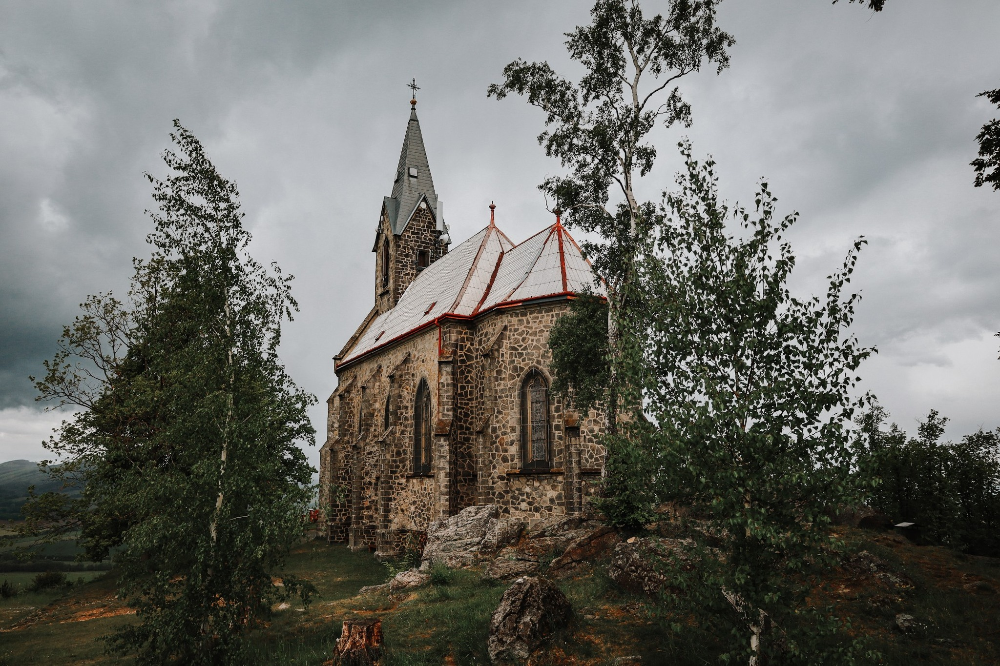
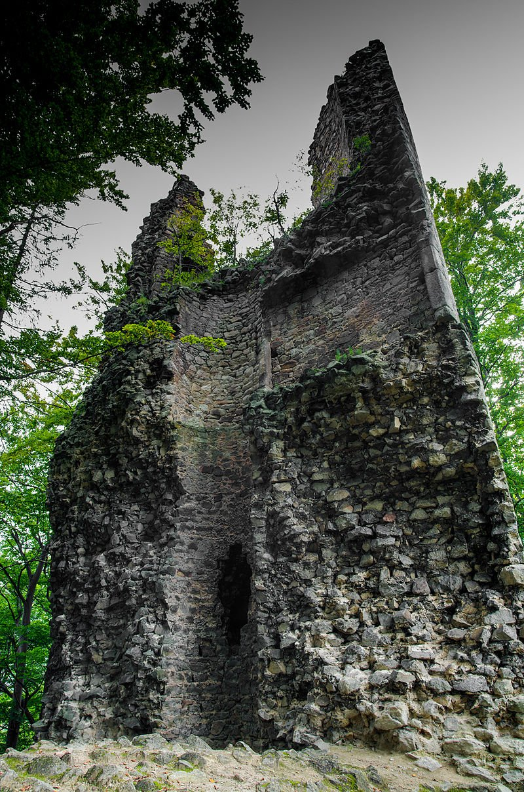
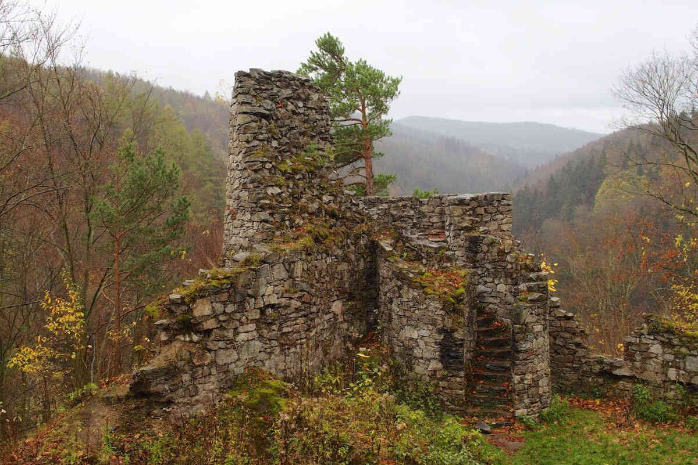

Základní Info
Kdy: Příjezd čtvrtek 19. 2. 2026 – Odjezd neděle 22. 2. 2026 (dopoledne)
Kde: Chalupa Netopýr, Černá Voda 103, 71954
GPS: 50.2972583N, 17.1314522E
Otevřít na Google Maps Otevřít na Mapy.czO Chatě
Bude to spíše chalupa, než chata.. Avšak s příhodným jménem Netopýr! S epickou společenskou místností, ve které bude epická společnost a Víťa. Důležité info od majitele:
- Kávovar na chatě je.
- Majitelé prosí o šetření s vodou.
- Nádobí je dostatek.
- V kuchyňské lince je spousta doplňkových potravin - sůl, cukr, olej, nějaké koření.
- Parkoviště pojme až 7 aut.
- NESTLAT POSTELE, KTERÉ BYLY POUŽITY.
 Odkaz na chalupu
Odkaz na chalupu
Program
Čtvrtek
- Příjezd
- Volná zábava & Zasvětění nováčků do pravidel Bloodu + krátká ukázka skriptů, které nás čekají
- Workshop: Jak se stát (dobrým) vypravěčem?
Pátek
- Dopoledne: Výšlap (spíše delší procházka, neboj se)
- Odpoledne/Večer: Blood on the Clocktower a cokoliv jiného
Sobota
- Dopoledne: Výšlap
- Odpoledne/Večer: Blood on the Clocktower a cokoliv jiného
Neděle
- Snídaně
- Odjezd (NESTLAT POSTELE, KTERÉ BYLY POUŽITY !)
Pozor!
Také se můžete těšit na vystoupení Slam poetry v podání Celest! Se kterým vyhrála druhé místo na slamu v Ostravě!
A samozřejmostí budou hudební večerní vložky, kdy si všichni spolu zahrajeme a zazpíváme. Tak si vemte jakékoliv hudební nástroje!
Jídlo a Pití
Voda je ze studny a majitel s majitelkou ji pijou, ale doporučuje koupit a pít balenou! Nemůžou zaručit kvalitu vody, nebo že někdo ze sousedů nemá trativod.
Pití
- Obyčejnou balenou vodu (perlivou i neperlivou) koupím + citron, či mátu do džbánu. (SPOLEČNÉ)
- Zbytek (džus, pivo, víno, colu...) si každý přiveze sám, podle jeho gusta. Vždy je vítáno, když myslíte i na ostatní a vezmete toho víc!
Jídlo
- Snídaně (SPOLEČNÉ): Koupím na první dva dny a na další dny se pojede nakoupit. Koupím základní věci: pečivo, sýry, šunku, máslo, pomazánkové máslo, bílý jogurt, müsli, ovoce (banány, jablka), zeleninu (rajčata, okurky, papriku), čaj, mléko, (zrna kávy dokoupíme, pokud nebude).
- Obědy a Večeře (SPOLEČNÉ): Rozdělíme se do skupin a každá skupina si vezme jedno jídlo, tedy oběd nebo večeři. Plus jeden oběd dáme v nějakém podniku na konci výletu?
- Buchta: Když upečete nějakou buchtu, nebo budete chtít udělat nějakou věc pro všechny, je to jen a jen vítáno!
- Snacky: Jakékoliv svačiny, brambůrky atd. si každý přivezte sami. Opět platí pravidlo, že je vítáno, když myslíte i na ostatní.
Položky označené "SPOLEČNÉ" budou zapsány do společných výdajů, které se poté rozpočítají rovnoměrně mezi všechny, kteří budou součástí společných jídel.
Udělám anketu, kam se můžete každý přihlasit, který oběd/večeři a s kým si vezmete na starost, ať máme vše pokryté. Ingredience si nakoupíte sami a jen spočítejte, kolik to stálo a to přidáte ke společným výdajům.
Pokud by si chtěl někdo vařit zvlášť nebo měl speciální požadavky na jídlo (alergie, intolerance), dejte to vědět dopředu, ideálně do skupinového chatu.
Co s sebou
- Ručník
- Přezůvky
- Vražednou náladu
Platba
Celková cena za ubytování je 18 100 Kč. Na jednoho tedy 1131,25 Kč (16 účastníků).
Pokud jsi platil zálohu:

Pokud jsi neplatil zálohu:

Číslo účtu pro ruční platbu: 1799757059/3030
Možné Výlety
Klidně navrhněte cokoliv jiného. Mně se nejvíc líbí ty první dva, i kvůli tomu, že nemusíme nikam ještě jezdit autem.
Boží hora:
- Výšlap o délce cca 12,5 km.

Zřícenina hradu Kaltenštejn:
- Výšlap po vícero místech, nejen na zříceninu. Délka 10 km.

Tančírna + Zřícenina hradu Rychleby
- Muselo by se přejet autem cca 25 minut.
- Ještě jsem se nedíval kde parkovat atd. Ani neplánoval trasu. Prý je tam i dobrá kavárna.


O Hře
Veškeré Info o Bloodu.
Pokud si chceš nastudovat pravidla nebo role dopředu: